CV
Academic Background
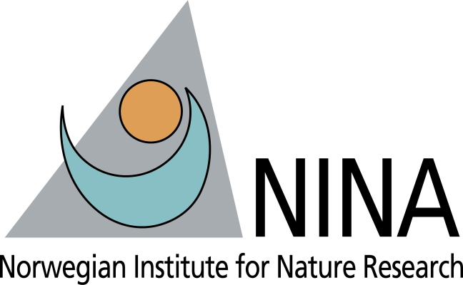
Erasmus+ Research
Norwegian Institute of Nature Research (NINA), Trondheim, Norway
Collaboration with Yann Czorlich & Geir H. Bolstad. Funded by ERASMUS+, DESSE INRAE & Région Bretagne.
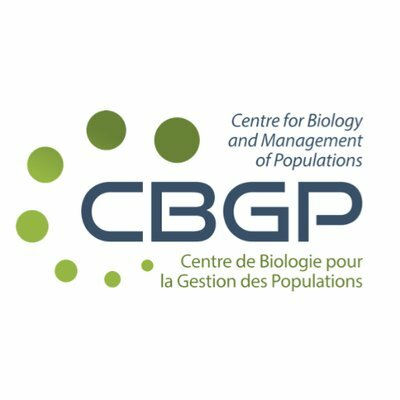
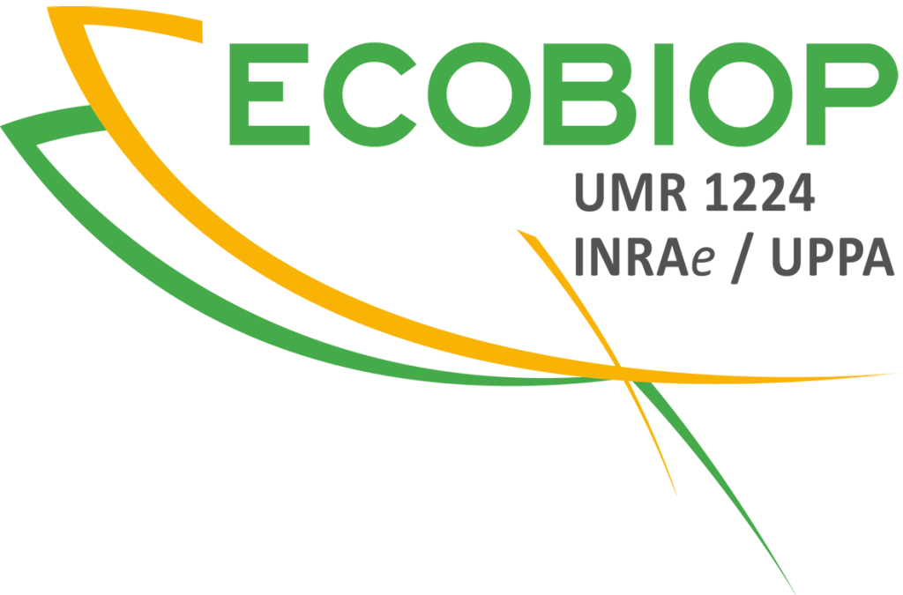
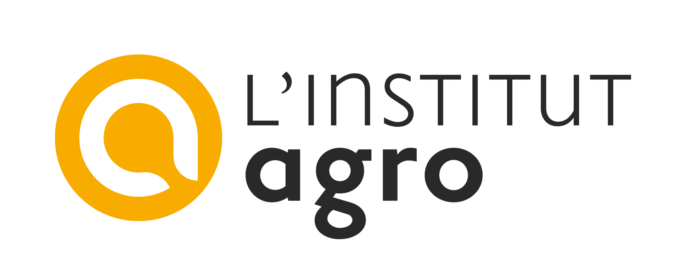
PhD in Evolutionary Genetics & Population Genomics
DECOD UMR 0985, INRAE – Institut Agro, Rennes, France
Dispersal and local adaptation of Atlantic salmon (Salmo salar) by genetic approaches.
Supervisors: Mathieu Buoro, Charles Perrier & Guillaume Evanno
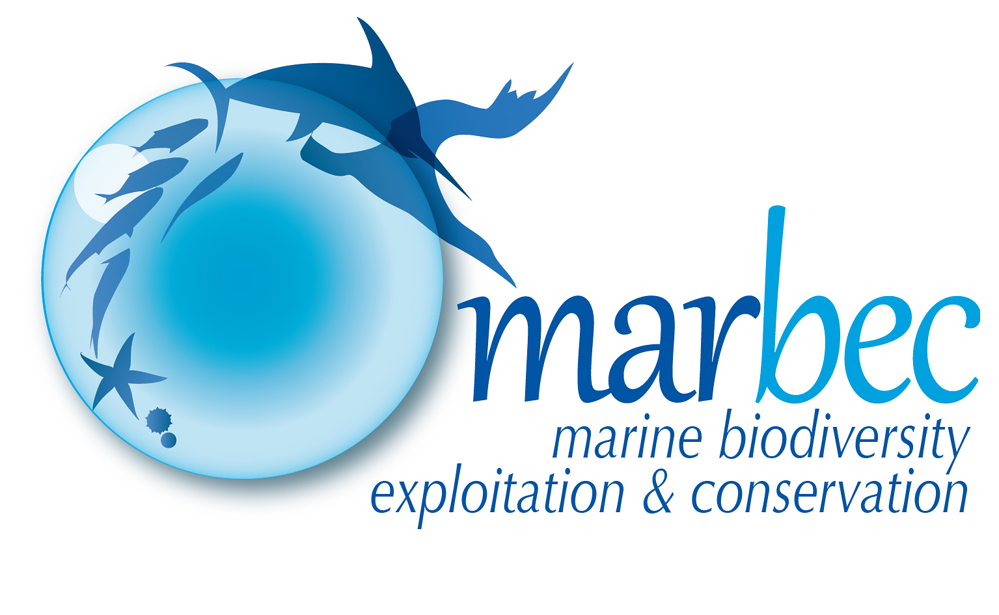
MSc Research Internship
UMR MARBEC, IFREMER Station, Sète, France
Biogeography and connectivity of cold-water corals Desmophyllum pertusum using genomic approaches.
Supervisors: Sophie Arnaud-Haond & Adrien Tran Lu Y
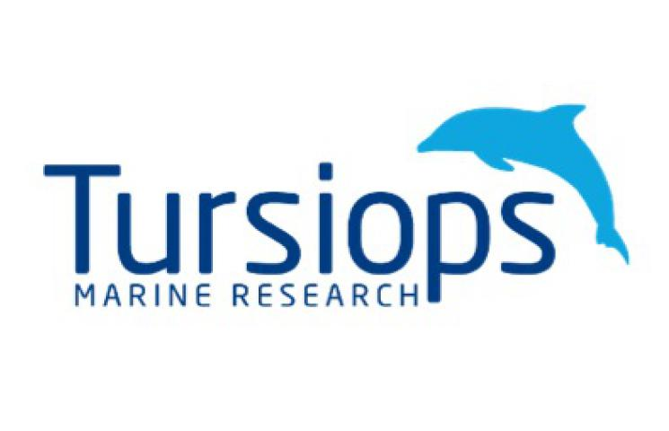
MSc Research Internship
Tursiops Marine Research, Palma de Mallorca, Spain
Intra- and inter-population comparisons of signature whistles of bottlenose dolphin (Tursiops truncatus).
Supervisor: Txema Brotons
MSc Environmental Management & Coastal Ecology
University of La Rochelle, France
Distinction — 2nd/31
Universitary Diploma Underwater sampling — BIOSOUM
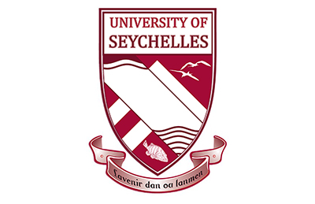
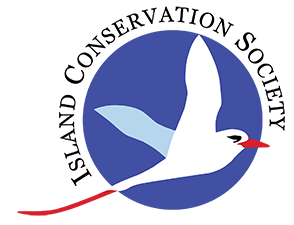
Volunteer Research Internship — Gap Year
University of Seychelles & Island Conservation Society, Aride Island, Seychelles
Population dynamics of Phaethon lepturus & Copsychus sechellarum / Reproductive success of sea turtles.
Supervisor: Gérard Rocamora
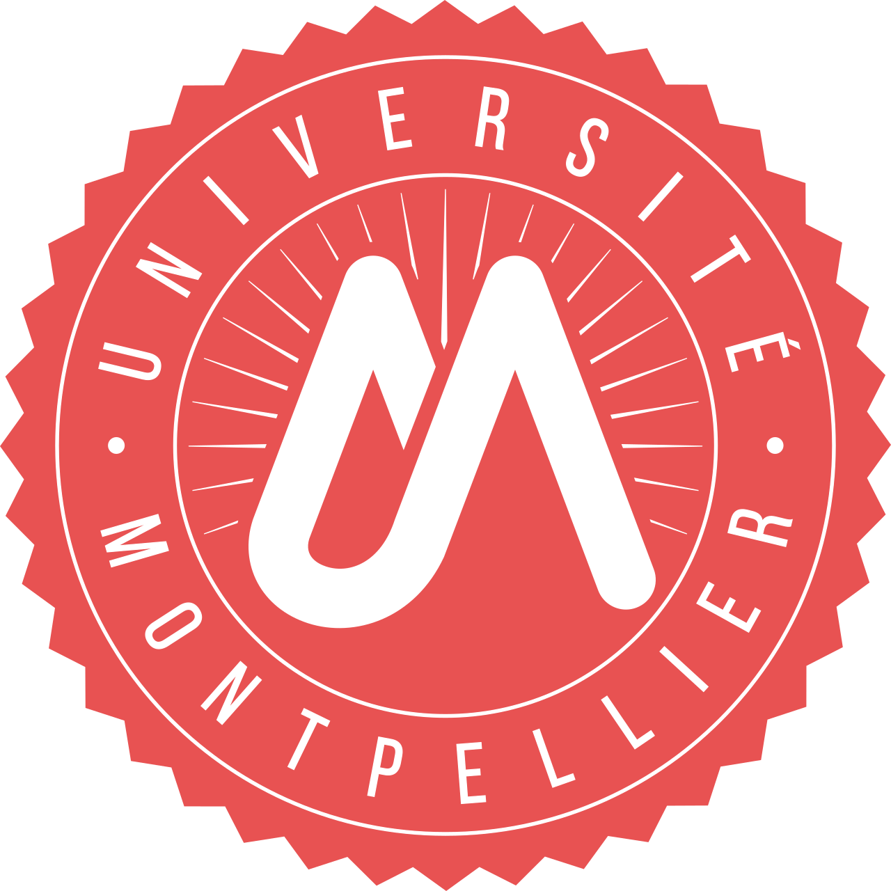
BSc in Biology, Environment & Earth Sciences
University of Montpellier, France
📢 Scientific Communications
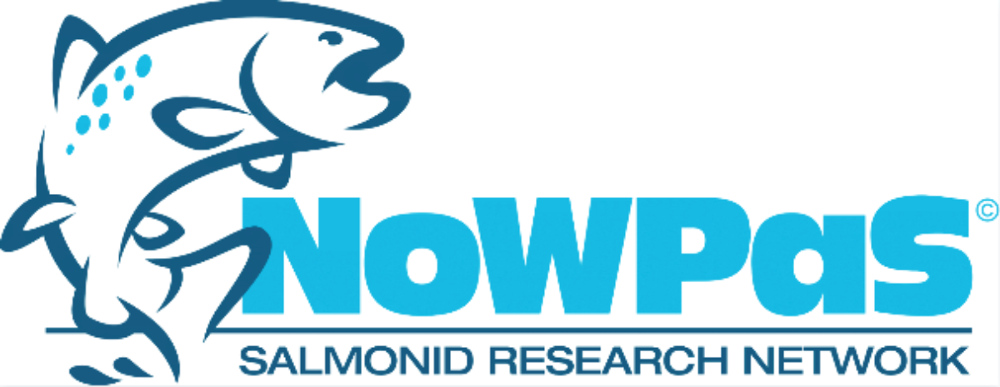
Oral Presentation — International Workshop of PhDs and Post-doctoral Fellows on Anadromous Salmonids
Hólar, Iceland
Egal E. High-density SNP genotyping uncovers fine-scale genetic structure and genetic basis of local adaptation in Atlantic salmon (Salmo salar).
Oral Presentation — NINA Lab Seminar
Trondheim, Norway
Egal E. Reproductive success of dispersers depends on the population of origin in Atlantic salmon.
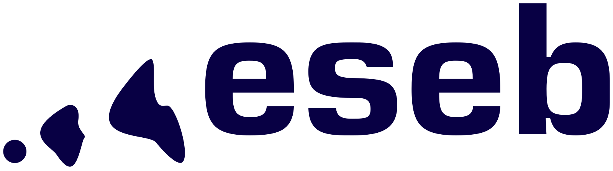
Poster — Congress of the European Society for Evolutionary Biology (ESEB)
Barcelona, Spain
Egal E. Reproductive success of dispersers depends on the population of origin in Atlantic salmon.
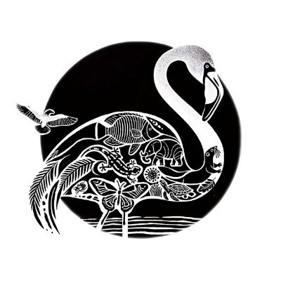
Oral Presentation — 17th Ecology & Behaviour Conference
Montpellier, France
Egal E. Reproductive success of dispersers depends on the population of origin in Atlantic salmon.
Oral Presentation — EvolBiol Rennes
Rennes, France
Egal E. Dispersion et succès reproducteur du saumon Atlantique par des approches génétiques.
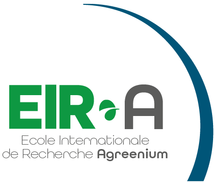
Oral Presentation — 13ème Séminaire de l'École Internationale de Recherche Agreenium (EIR-A)
Montpellier, France
Egal E. Dispersion et succès reproducteur du saumon Atlantique par des approches génétiques.
🏫 Teaching & Supervision
MSc student — Julia Kamphuis, University of Rennes
Detection of genomic signatures of adaptive introgression in wild Atlantic salmon populations. Co-supervised with Guillaume Evanno.
Teaching Assistant — University of Rennes 1
30+ hours (lectures, practicals, tutorials)
| Level | Module | Hours |
|---|---|---|
| BSc 2 | Quantitative Biology | 19h |
| MSc 1 | Molecular approaches in ecology & evolution | 5h30 |
| MSc 1 | Landscape Ecology | 10h30 |
Educational Tutor — University of La Rochelle
First-year Life Sciences students
🏫 Grants, Scholarships & Awards
Erasmus+ Mobility Grant
(€1,710)
DESSE Mobility Grant — EIR-A
(€2,500)
Collège Doctoral de Bretagne — Mobility Grant
(€2,400)